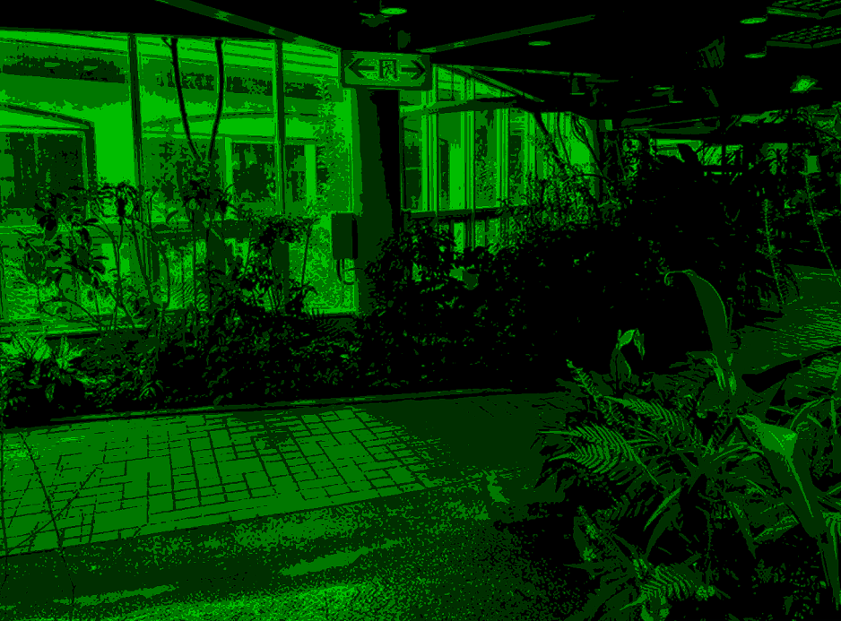
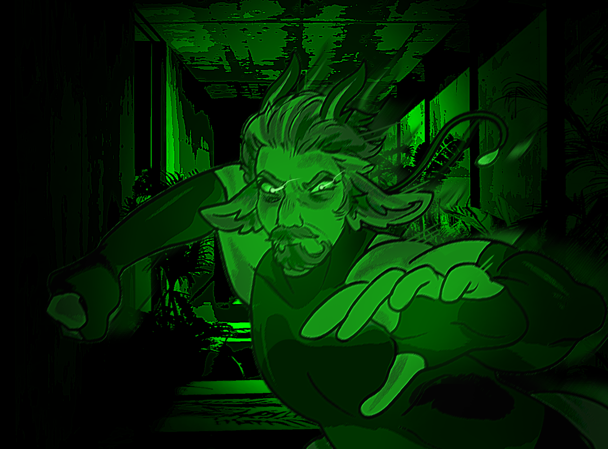
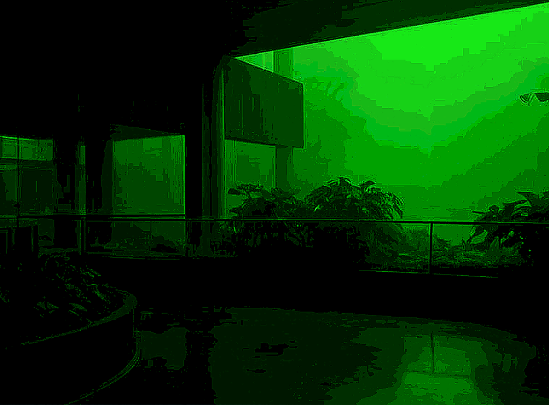
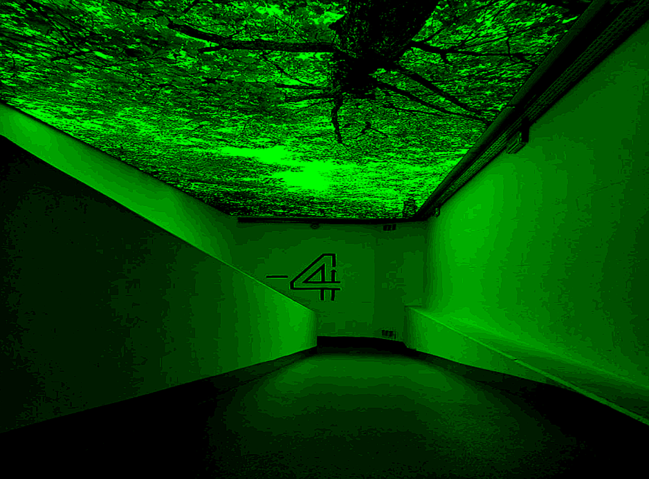
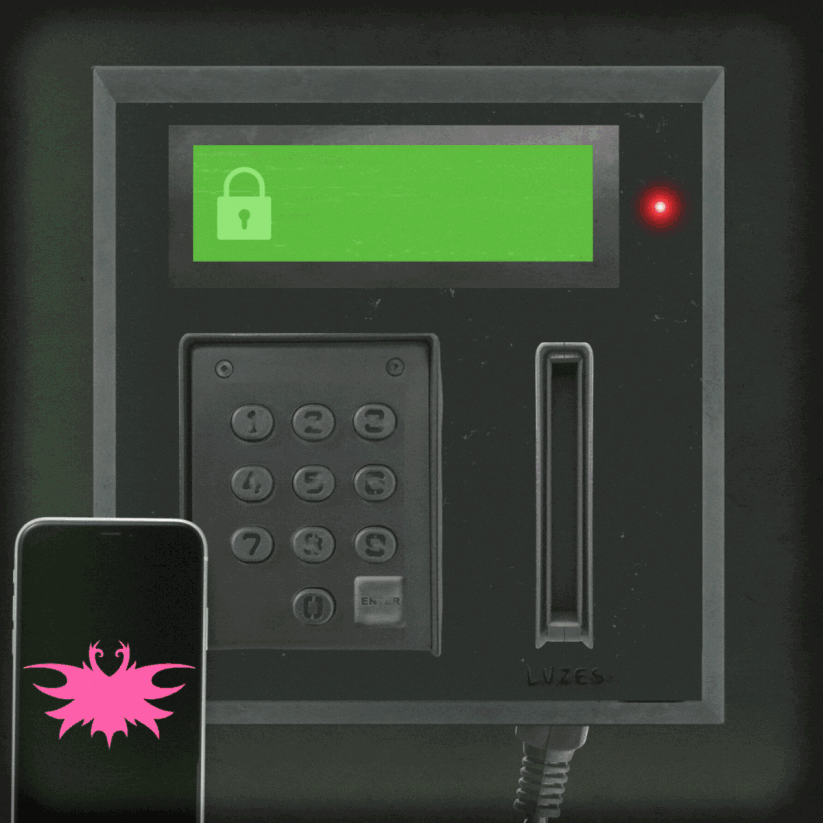

<!DOCTYPE html>
<html lang="pt-br">
<head>
  <meta charset="utf-8" />
  <meta name="viewport" content="width=device-width,initial-scale=1" />
  <title>Operação Hariposa</title>
  <style>
    body, html {
      height: 100%;
      margin: 0;
      background: #000;
      color: #00ff66;
      font-family: "Courier New", Courier, monospace;
      display: flex;
      align-items: center;
      justify-content: center;
      padding: 20px;
      box-sizing: border-box;
    }

    .holder {
      max-width: 800px;
      text-align: center;
    }

    .holder p {
      text-align: justify;
      margin-bottom: 40px;
    }

    .btn {
      display: inline-block;
      margin: 8px;
      padding: 12px 20px;
      border: 2px solid #00ff66;
      border-radius: 6px;
      color: #00ff66;
      text-decoration: none;
      font-size: 1rem;
      cursor: pointer;
      background: transparent;
    }

    img {
      width: 100%;
      max-height: 300px;
      border: 2px solid #00ff66;
      border-radius: 6px;
      margin-bottom: 20px;
    }
  </style>
</head>
<body>
  <div class="holder" id="game"></div>

  <script>
    const game = document.getElementById("game");

    function show(content) {
      game.innerHTML = content;
    }

    function start() {
      show(`
        <p>
          Vocês chegaram no palácio de Saphoria não é? Ótimo...<br><br>
          Vocês se recordam do domingo passado, correto? Pois bem... Utilizaremos as informações que adquirimos quando invadimos as câmeras de segurança para ir até o lugar correto. Sejam cuidadosos, afinal a guarda ainda está no palácio. Um corredor errado e vocês podem ser pegos, afinal o caminho que estamos tomando no momento é o único livre.
        </p>
        <button class="btn" onclick="salao()">Continuar</button>
      `);
    }

    function salao() {
      show(`
      
        <p>Você se encontra no saguão do palácio. Siga as coordenadas que lhe foram passadas para chegar ao destino final.</p>
        ${botoes('correto1', 'erro', 'erro', 'erro')}
      `);
    }

    function erro() {
      show(`
        
        <p>Essa não! Você chamou a atenção dos guardas!</p>
        <button class="btn" onclick="start()">Voltar ao início</button>
      `);
    }

 function correto1() {
  show(`
    
    <p>Certo, este caminho está livre. Qual era a próxima direção a se seguir mesmo...?</p>
    ${botoes('erro', 'erro', 'correto2', 'erro')}
  `);
}


    function correto2() {
      show(`
        
        <p>Você chega em um corredor vazio, por sorte, nenhum guarda por perto. Qual seu próximo passo?</p>
        ${botoes('erro', 'correto3', 'erro', 'erro')}
      `);
    }

    function correto3() {
      show(`
       
        <p>Estamos quase lá! Tão perto... Por onde vamos agora?</p>
        ${botoes('erro', 'erro', 'erro', 'corretoFinal')}
      `);
    }

  function corretoFinal() {
  show(`
  <br>
  <br>
    
    <p>
      Uhg é claro que teria uma senha, eles não deixariam a passagem livre para qualquer um, esse palácio é extremamente protegido.<br><br>
      Infelizmente meu cartão de acesso foi restrito, então eu não poderia entregá-lo para vocês mesmo se quisesse, mas não se preocupem isso vai ser moleza para nós... pelas fotos que vocês mandaram isso parece uma simples sequência de números baseadas em alguma palavra...<br><br>
      Bom, ainda bem que eu tenho o programa perfeito para isso! :)<br>
      Ele vai fazer a primeira parte do trabalho para vocês, a partir das cores vocês só vão precisar usar suas habilidades e decodificar o resto!<br><br>
      Precisamos descobrir a sequência de números para digitar no painel e enfim entrar...
    </p>
  `);
}


    function botoes(d, e, c, a) {
      return `
        <button class="btn" onclick="${d}()">Direita</button>
        <button class="btn" onclick="${e}()">Esquerda</button>
        <button class="btn" onclick="${c}()">Cima</button>
        <button class="btn" onclick="${a}()">Abaixo</button>
      `;
    }

    // Início do jogo
    start();
  </script>
</body>
</html>
